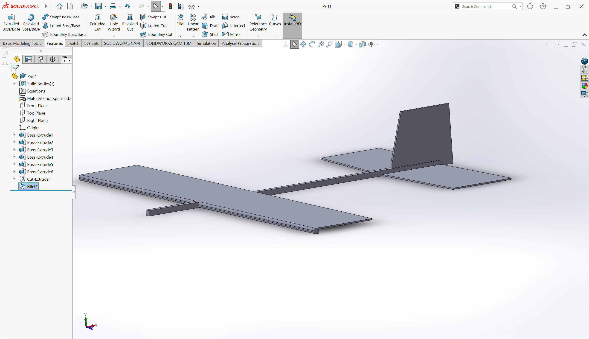
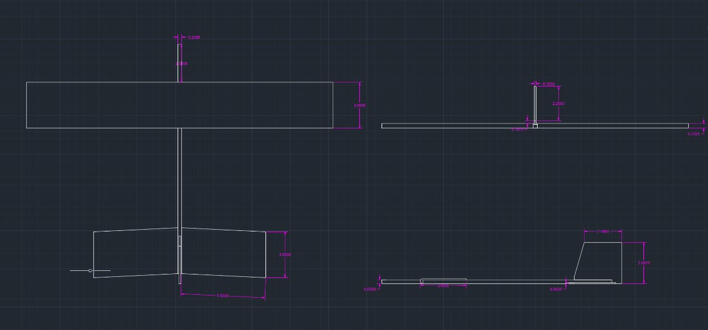
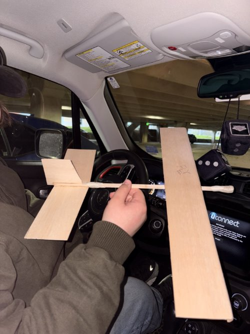

Design Build Fly (DBF) — Glider Design & Construction
Designed a glider in SolidWorks and translated the CAD model into a physical prototype using balsa wood and glue, working through an end-to-end engineering workflow spanning CAD design, material selection, fabrication, and assembly.


